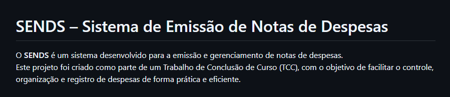

Guilherme de Lima Leite
Estudante da Fatec e estagiário na Pronext.
Criando e aprendendo soluções focadas em software.
Sobre Mim
Estudante de Desenvolvimento de Software Multiplataforma. Na procura por uma oportunidade de aplicar, aprender e desenvolver conhecimentos técnicos em Tecnologia da Informação.
Formado como Técnico em Informática na UNIVAP, com experiência aplicada em estágio com uso de Python e SQL para desenvolvimento de sistemas.
Projetos

Sistema-de-emissao-de-notas-de-despesas
Este projeto foi criado como parte de um Trabalho de Conclusão de Curso (TCC)
Python
SQL
Clique aqui para ver o repositório